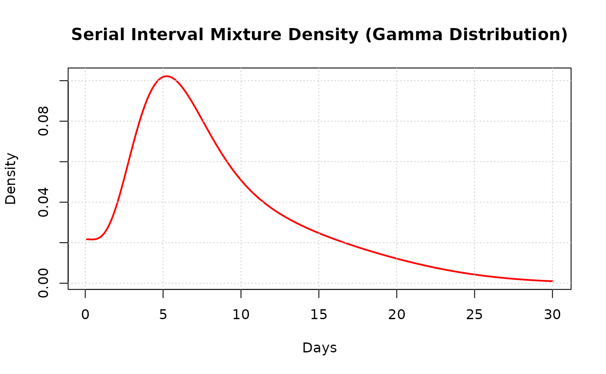

Calculate serial interval mixture density assuming underlying gamma distribution
Source:R/f_gam.R
f_gam.RdThis function computes the weighted mixture density for serial intervals based on different transmission routes in an outbreak. It implements part of the Vink et al. (2014) method for serial interval estimation, assuming an underlying gamma distribution for the serial interval.
Arguments
- x
quantile or vector of quantiles (time in days since index case symptom onset)
- w1
probability weight of being a co-primary case
- w2
probability weight of being a primary-secondary case
- w3
probability weight of being a primary-tertiary case
- mu
mean serial interval in days (must be positive)
- sigma
standard deviation of serial interval in days (must be positive)
Value
Vector of weighted density values corresponding to input quantiles x. Returns the sum of densities from all four transmission routes.
Details
The function models four distinct transmission routes:
Co-primary (CP): Cases infected simultaneously from the same source
Primary-secondary (PS): Direct transmission from index case
Primary-tertiary (PT): Transmission through one intermediate case
Primary-quaternary (PQ): Transmission through two intermediate cases
Each route contributes to the overall serial interval distribution with different means and variances. The co-primary component uses a modified gamma distribution to account for simultaneous infections, while subsequent generations follow gamma distributions with progressively longer means and larger variances.
This function is primarily used internally by si_estim when
dist = "gamma" is specified, and by plot_si_fit for
visualizing fitted distributions.
The weights w1, w2, and w3 must sum to <= 1, with the remaining probability (1 - w1 - w2 - w3) assigned to primary-quaternary cases. The function converts the mean and standard deviation to gamma distribution shape (k) and scale (\theta) parameters using the method of moments: $$k = \mu^2 / \sigma^2$$ $$\theta = \sigma^2 / \mu$$
References
Vink, M. A., Bootsma, M. C. J., & Wallinga, J. (2014). Serial intervals of respiratory infectious diseases: A systematic review and analysis. American Journal of Epidemiology, 180(9), 865-875.
Examples
# Example: Plot serial interval mixture density for influenza-like outbreak
# Set parameters for a typical respiratory infection
mu <- 6.5 # Mean serial interval of 6.5 days
sigma <- 2.8 # Standard deviation of 2.8 days
# Set transmission route weights
w1 <- 0.1 # 10% co-primary cases
w2 <- 0.6 # 60% primary-secondary cases
w3 <- 0.2 # 20% primary-tertiary cases
# Remaining 10% are primary-quaternary cases (1 - w1 - w2 - w3 = 0.1)
# Create sequence of time points
x <- seq(0.1, 30, by = 0.1)
# Calculate mixture density
density_values <- f_gam(x, w1, w2, w3, mu, sigma)
# Plot the result
plot(x, density_values, type = "l", lwd = 2, col = "red",
xlab = "Days", ylab = "Density",
main = "Serial Interval Mixture Density (Gamma Distribution)")
grid()
